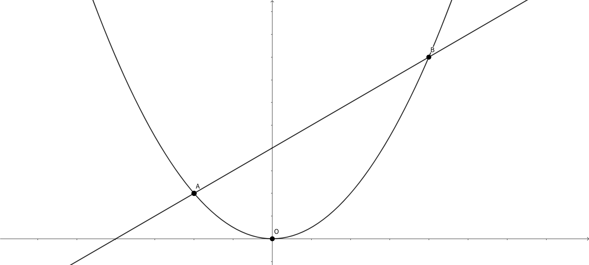

正しい値ではありませんでした。
第1問
放物線\(y=ax^2\)上に2点A,Bがあり，それぞれの\(x\)座標は，-1,2である。
このとき，次の問いに答えなさい。
なお，直線ABの傾きは\[ \frac{1}{4} \]である。
問1.\(a\)の値を求めよ。なお，\(a = D\)とする。
問2.直線ABの式を求めよ。なお，直線ABの切片を\(E\)とする。
問3.三角形OABの面積を求めよ。なお，この値を\(F\)とする。
問4.放物線\(y=ax^2\)上に点Cをとったところ，三角形OABの面積が三角形OACの面積の3倍となった。点Cのx座標が負の数となる場合のy座標の値を求めよ。なお，この値を\(G\)とする。

答え(閉じる)
文字ごとに正しいフィールドに記入してください。記入されなかった場合、正しく採点されない可能性があります。
MathJax の使い方を練習します。
一次方程式 \(ax+b=0\) の解は\[ x =-\frac{b}{a} \]です。